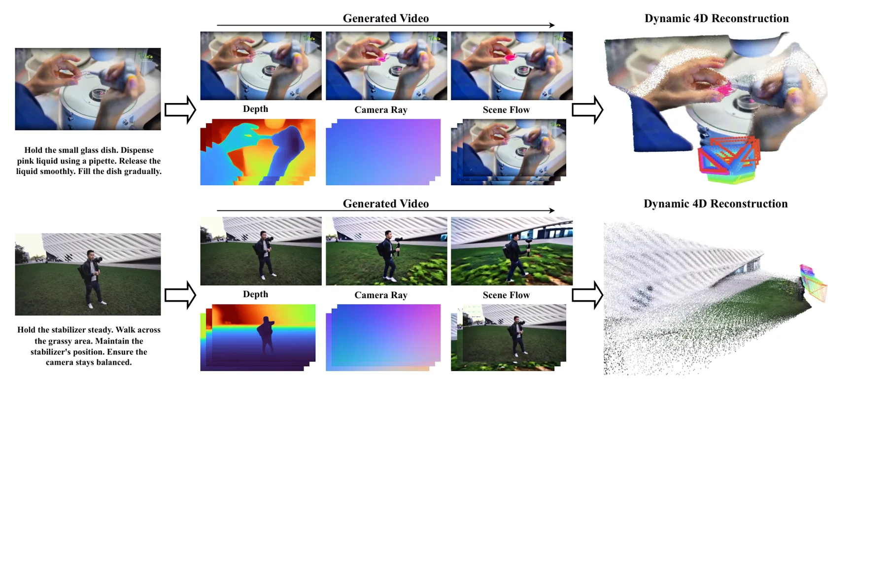
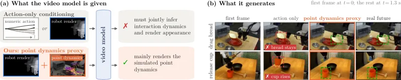

新论文 · 日期 2026-11-20 · score 10 · S层 · 3D/4D Spatial Perception · cs.CV
内容级别：完整单篇海报
作者：Hangwei Zhang, Rujing Dang, Ruimin Lin, Jiahong Wu
评分 8.9/10
4D 世界模型模型缝合Depth Anything 3场景流视频生成
一句话工作总结：一句话：用冻结 DA3 当几何 critic、LongCat-Video 当生成先验，从同一条视频潜轨迹一次读出 RGB 与 4D 几何。
多数未来预测世界模型只追求生成视频的观感，缺少显式 4D 建模，物理落地与跨时间几何一致性都弱。Plan4D 从场景上下文和文本动作同时预测未来 RGB 与稠密 4D 几何，包括深度、相机、点云和场景流。由于带动作与稠密 4D 标注的数据稀缺，它把视频生成器 LongCat-Video 与 3D 重建器 Depth Anything 3 通过模型缝合接起来，并加一个 DPT 风格 scene-flow head。合…
Most world models for future prediction prioritize aestetic quality of generated videos, but offer only weak physical grounding and limited geometric consistency over time, due to the lack of explicit 4D model…

新论文 · 日期 2026-11-18 · score 10 · S层 · Geometry Foundation Models / 3D Foundation Models · cs.RO
内容级别：完整单篇海报
作者：Mingyang Lyu, Yinqian Sun, Gongce Cao, Guobin Shen
评分 9.1/10
VLA 鲁棒性相机位姿VGGT运动学渲染测试时适配
一句话工作总结：一句话：未知的相机和静态场景用 VGGT 估，已知的机械臂用运动学画，再把两者合成回训练视角，冻结 VLA 就能恢复。
VLA 策略隐含假设第三人称相机固定在数据采集位姿；相机被碰、重装或换镜头后，任务与机器人没变，成功率却会骤降。Homeward 是一个训练无关、即插即用的观测适配器，把未标定部署相机的画面规范化回训练视角，再交给冻结 VLA。它的关键观察是：用现成前馈 3D 模型重建整个场景反而会把细长运动的机械臂撕碎，而机械臂的 3D 状态本来可由运动学精确给出；因此它只估计未知的相机与静态场景，机器人连杆直接用正运动学渲染。…
Vision-language-action (VLA) policies implicitly assume that third-person cameras remain fixed at their data-collection poses; once a camera is bumped, remounted, or swapped at deployment, task success degrade…

新论文 · 日期 2026-11-16 · score 10 · S层 · Geometry Foundation Models / 3D Foundation Models · cs.RO
内容级别：完整单篇海报
作者：Yiyuan Ge, Changxing Ding, Ziyu Hao, Zijie Zheng
评分 8.3/10
机器人预训练3D 基础模型手部轨迹注意力引导模仿学习
一句话工作总结：一句话：不只用手轨迹，而是把 VGGT/Depth Pro 的中间几何特征、深度图和手部注意力都蒸进策略编码器。
基于人类视频预训练机器人策略，关键是视频缺少显式的动作相关表示。现有方法用 3D 基础模型估手部轨迹，但只保留稀疏轨迹做监督，丢掉了提取过程中的稠密几何与深度。LSA 分三阶段：Lift 把策略浅层特征自适应对齐到多个 3D 基础模型的中间表示；See 用深度重建和手部区域注意力提供几何与交互引导；Act 预测未来 3D 手轨迹并接轻量行为克隆头。仿真与真机实验显示，它在多种操作任务上优于当前最好方法。
Robot policy pretraining based on human videos is crucial for improving the policy's generalization ability. One main challenge for this task is the lack of explicit action-relevant representations in such unl…

新论文 · 日期 2026-11-18 · score 10 · A层 · Robust State Estimation / Uncertainty · cs.RO
内容级别：半海报
作者：Michael Maravgakis, Stylianos Piperakis, Panos Trahanias
评分 8.6/10
足式机器人本体感知不变 EKF高程图垂向漂移
一句话工作总结：一句话：把走过的地面当路标，落脚写图、重访回灌，只修垂向位置，纯本体也能把高度漂移锚住。
视觉退化环境中的足式机器人只能靠本体感知，而全局位置与偏航不可观测，垂向漂移尤其危险，会破坏摆腿轨迹所需的高度参考。作者把地形本身当成持续的本体感知地标：每一步落脚都提供高度测量，用来锚定垂向轴。SBEE 让左不变 EKF 与栅格高程图双向耦合，稳定接触把带不确定度的高度样本写入地图，已建图单元再作为方差加权垂向伪观测回灌，效果类似回环。ANYmal-D GrandTour 的 296 m 序列上，绝对轨迹误差比三…
Legged robots in visually degraded environments must rely exclusively on proprioceptive sensing, under which global position and yaw are unobservable. Vertical drift is particularly detrimental, as it corrupts…

新论文 · 日期 2026-11-19 · score 7 · A层 · Robotic Foundation Models / VLA · cs.CV
内容级别：半海报
作者：Dong An, Tianyu Liu, Haoran Ding, Wen Yang
评分 8.2/10
世界模型点动力学场景流视频生成DROID
一句话工作总结：一句话：先让点动力学模拟「物体怎么动」，再让视频模型只负责「看起来怎样」，交互保真度就上来了。
机器人世界模型从当前观测和动作序列预测未来视频，但现有模型虽然能跟住动作，被操作物体却常塌陷或运动不一致。作者认为问题在条件：动作或机器人渲染只说明机器人去哪，不说明场景如何响应。于是把动力学预测与视觉渲染分开，用 3D 点动力学作为中间代理：首帧提升为 3D 点，学习模型模拟点对机器人运动的响应，再把点渲染成像素对齐视频供任意视频模型读取。DROID 上两种不同架构渲染器的物体运动误差分别降低 8.6% 和 6.…
Robotic world models predict future video frames from the current observation and a sequence of robot actions. While recent models follow the given actions closely, manipulated objects often collapse or move i…

新论文 · 日期 2026-11-19 · score 7 · A层 · Embodied Navigation / VLN / Spatial Reasoning · cs.CV
内容级别：半海报
作者：Zinan Zheng, Nuo Chen, Jia Li
评分 8/10
空间推理工具编排分层记忆VLM 智能体MetricBench
一句话工作总结：一句话：把「哪个几何工具、按什么顺序用」存成场景-任务两层经验，冻结 VLM 检索后执行，不再每次从零试错。
VLM 的定性空间推理已经不错，但定量推理仍弱；现有工具增强方法通常把每个功能绑定到单一预定义视觉专家，形成固定流水线。不同场景和任务需要不同的工具编排与专家选择，组合空间又太大，智能体很难每次选对。SpatialMem 用两层记忆解决：任务记忆记录工具编排，场景记忆记录专家选择，并用双状态轨迹优化保留成功经验、修正次优轨迹。作者同时提出 MetricBench，覆盖室内外三类定量任务；方法在 MetricBenc…
Vision Language Models (VLMs) have shown remarkable capabilities in qualitative spatial reasoning, but remain limited in quantitative spatial reasoning. Current work leverages the VLM agent to invoke external…
新论文 · 日期 2026-11-18 · score 18 · A-层 · Real-time / GPU Robotics Systems · cs.RO, cs.CV
内容级别：简报式摘要
作者：Edward Beng Wai Tan, Siew-Kei Lam
评分 8.4/10
三角面片稠密 SLAMGICP实时Jetson
一句话工作总结：一句话：把三角面片的质心交给深度+GICP 跟踪，建图只做非平移更新，换来 100 FPS 和更准的表面。
基于 3D Gaussian splatting 的稠密 SLAM 渲染逼真，但表面几何差，出网格还要额外提取或融合。三角面片 splatting 的顶点可直接三角化成连通网格，但现有 SLAM 依赖光度跟踪，速度达不到传感器帧率。Facet-SLAM 把跟踪与建图角色分开：跟踪器用融合深度设定每个三角面片的质心，再用 GICP 把帧配准到质心；建图器通过变量替换被限制为不做平移的更新。系统在桌面 GPU 上约 1…
Dense SLAM systems based on 3D Gaussian splatting build maps that render photorealistically, but their surface geometry is poor, and obtaining a mesh requires extraction or fusion stages. Triangle splatting av…
新论文 · 日期 2026-11-17 · score 21 · B层 · Neural Rendering / 3DGS / NeRF · cs.CV
内容级别：简报式摘要
作者：Qi Shao, Zhihao Cao, Shuhao Zhai, Taoyu Wu
评分 7.8/10
全景 SLAM多智能体高斯 splatting球面回环Sim(3)
一句话工作总结：一句话：用球面 FFT 相关 + 全局 Sim(3) 共识解决全景多智能体的朝向回环与假回环，再用 Sim(3) 位姿图修尺度。
多智能体稠密建图对搜救、建筑巡检和仓储很重要，全景相机一帧就能覆盖四周。但全景智能体可以在任意 3D 朝向看到重叠场景，全旋转搜索也会在对称房间之间产生互相一致的假回环；单目尺度漂移会让刚性合并的地图在重访表面裂开，短基线深度噪声又会扭曲回环平移方向。CoSphere-SLAM 用 SO(3) 上的球面特征 FFT 相关做任意朝向对齐，再用全局 Sim(3) 一致性拒绝对称假回环；随后解每关键帧 Sim(3) 位姿…
Dense collaborative mapping is essential for search and rescue, building inspection, and warehouse automation, where panoramic cameras capture the entire surroundings in a single frame. Unlike pinhole agents t…
新论文 · 日期 2026-11-19 · score 6 · C层 · 纯 GNSS/INS / PPP-AR · cs.RO
内容级别：简报式摘要
作者：JiaXu Chee, Simon Denman, Fahira Afzal Maken, Qingqing Cheng
评分 7.2/10
GNSSSPP自监督伪距校正可微优化
一句话工作总结：一句话：用可微定位求解器把伪距校正的自监督信号传回去，不依赖真值也能把 SPP 的大误差离群值压下去。
GNetSS 是一个自监督 GNSS 位置校正框架，不需要真值位置就能提升单点定位（SPP）的鲁棒性。它把 transformer 网络与可微的确定性定位求解器结合：网络建模卫星间几何与时间上下文，预测逐卫星伪距校正；求解器按 GNSS 几何和可选运动约束把校正后的观测变成接收机位置修正。训练信号直接来自 GNSS 观测一致性，而不是真值。实验覆盖开阔天空、城市和森林环境，对大幅值离群值尤其有效，最大 3D 定位误…
We present GNetSS, a self-supervised GNSS position correction framework that improves the robustness of single point positioning (SPP) without requiring ground-truth locations for training. GNetSS combines a t…